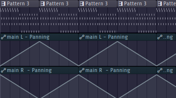

Inleiding
Voor mijn hoofdproject binnen de minor Muziek & Technologie heb ik een EP geproduceerd bestaande uit vier originele nummers. De EP is geïnspireerd door het internet en cyber security, met psychedelische sounds die deze concepten muzikaal vertaalt. Dit document beschrijft mijn creatieve en technische proces, het verloop van het project, en mijn reflecties op persoonlijke ontwikkeling.
Tijdlijn
Voordat er begonnen kan worden aan de EP heb ik eerst een planning gemaakt om te kijken wat ik wanneer wil gaan doen. Zo wil ik in de beginfase gaan kijken naar wat goede geluiden zijn, wat goede technieken zijn en hoe ik kan werken in een DAW (Digital Audio Workstation). Maar naast dat ik een goed geluid wil vinden wil ik ook een doel hebben. Daarom wil ik in deze periode ook een onderwerp gaan vinden voor de EP. Wanneer dit is gedaan kan er begonnen worden aan de compositie en het produceren van de muziek. Wanneer ik dit heb gedaan kan ik gebruik maken van feedback van medestudenten, begeleiders en andere mensen met kennis in het vakgebied. Tot slot is er tijd om te kijken naar hoe ik het wil gaan presenteren.
- Week 1–2: Geluidsverkenning
- Week 3–7: Compositie & productie
- Week 4–8: Feedback verwerken
- Week 9–10: Presentatie voorbereiding
Fase 1 – Verkennen
Wat heb ik gedaan? In de beginfase heb ik me gefocust op sounddesign en experimentatie. Ik heb gewerkt met verschillende synthesizers zoals Vital en me verdiept in effecten, modulatie en mixtechnieken. Het doel was om een unieke klankwereld te creëren die past bij mijn stijl: sfeervol, dromerig en euforisch. Om dit te bereiken ben ik aan verschillende projecten begonnen. Mijn eerste project was het namaken van een bestaand nummer “Solitude (Felsmann + Tiley Reinterpretation)”. Ik ben hiermee aan de slag gegaan in Vital en heb vervolgens een vergelijkbare sound gekregen.
Solitude - M83
Vervolgens ben ik een video tegengekomen online waarin wordt uitgelegd hoe Acid techno wordt gemaakt. Ik heb deze video bekeken en ben vervolgens zelf aan de slag gegaan met het maken van een Acid techno voorbeeld. Dit heb ik gedaan in FL Studio en met behulp van de plugin "Vital". Door te spelen met de slider van de filter en de cutoff heb ik een Acid techno geluid weten te creëren. Het resultaat hiervan is te horen in het volgende nummer:Acid Techno
Inspiratie
Hierna ben ik weer een ander nummer na gaan maken wat goed past bij het soort muziek dat ik wil gaan maken. Dit nummer is "Sordid Affair" van Royksopp. Ik heb dit nummer nagebouwd in FL Studio en heb hier ook weer gebruik gemaakt van de plugin "Vital". Het resultaat hiervan is te horen in het volgende nummer:@cableguys
Sordid Affair - Royksopp
Experimenten met eigen geluid
Vervolgens heb ik nog een paar experimenten gedaan met het maken van een eigen geluid. hieronder vallen de volgende nummers:Experiment 1
Een iets meer dystopisch geluid, wat goed past bij de sfeer die ik wil neerzetten.Experiment 2
Een meer dancerend geluid.Experiment 3
Een mix van de vorige experimenten, maar dan met een meer dromerige vibe.Door deze experimenten heb ik veel geleerd over sounddesign, modulatie en het creëren van een eigen geluid.
Fase 2 – Compositie en productie
In deze fase heb ik de opgedane kennis toegepast om vier originele nummers te componeren voor mijn EP "Firewalls & Frequencies". Elk nummer heeft een eigen thema en sfeer, maar samen vormen ze een geheel. De nummers zijn:- Phishing
- In This World
- That’s Where It Grew
- Escaped
Voordat ik begon met het maken van de nummers, ben ik eerst gaan kijken naar de teksten die ik wilde gebruiken. Ik doe zelf een study in het gebied van Cyber Security dus ik wilde hier ook iets mee doen in de teksten. Ik heb de teksten geschreven met het idee om een verhaal te vertellen over het normale leven met termen die te maken hebben met Cyber Security.
That's Where It Grew
Het eerste nummer waar ik aan begonnen ben is het nummer "That's where it grew". De eerste stap die ik heb genomen is het bedenken van een melodie. Nu heb ik al een aantal experimenten gedaan met het maken van een eigen geluid, dus ik heb besloten om een eerder gemaakt geluid te gebruiken. Dit geluid heb ik vervolgens gebruikt om een melodie te maken en ben ik begonnen met het maken van de lyrics. Na enkele dagen mixen in FL Studio heb ik de eerste versie van het nummer af kunnen maken voor de eerste playtest.
1e versie
Playtest 1
Bij de eerste playtest heb ik de testers op een tafel laten liggen met een sterrenhemel boven hun hoofd. De muziek speelde op de achtergrond en de testers konden zich volledig focussen op de muziek. De feedback die ik kreeg was dat de muziek goed paste bij de sterrenhemel en dat het een dromerige sfeer creëerde. Ook kreeg ik feedback dat de muziek goed paste bij het thema van de EP en dat het een goede opbouw had maar dat er wel nog wat aan de drum moest worden gesleuteld. Deze feedback heb ik meegenomen in de volgende versie van het nummer.
Na de eerste playtest ben ik verder gegaan met het mixen van het nummer en heb ik de lyrics aangepast. Ik heb de lyrics aangepast zodat ze beter pasten bij het thema van de EP en de sfeer van het nummer. Daarnaast heb ik ook feedback gevraagd aan een student van het Conservatorium van Utrecht. Hij gaf aan dat er nog wat ruimte was voor verbetering in de mix en dat de vocals beter naar voren moesten komen. Daarnaast gaf hij aan dat ik met eq moest gaan spelen in de lagere frequenties om de muziek beter te laten klinken. Deze feedback heb ik meegenomen in de volgende versie van het nummer.
Dit nummer heeft een psychedelische sfeer, maar er komt ook tekst doorheen waarin het ontstaan van het internet wordt beschreven. Na het verwerken van alle feedback ben ik gekomen op de volgende versie van het nummer:
That's Where It Grew - Valentijn keijser
Lyrics
far far away
bright in the day
nothing to do
that's where it grew
Shapes in the sky
My only friend
all of the lights
That never end
Soft is the sound
Carried by breeze
Floating through time
Lost in the seas
And there far into the code
all the waiting for the page to load
Overtime to share the world
all the things you do
What you turn into
far far away
bright in the day
nothing to do
that's where it grew (that's where it grew)
Shapes in the sky (in the sky)
My only friend (My only friend)
all of the lights (all of the lights)
That never end (That never end)
Soft is the sound
Carried by breeze
Floating through ti me
Lost in the seas
That never end
that's where it shapes in the sky (in the sky)
My only friend (My only friend)
all of the lights (all of the lights)
That never end (That never end)
Uiteraard zijn er veschillende technieken gebruikt om dit nummer zo te laten klinken. Zo is een voorbeeld sidechaining. Dit is techniek waarmee je een geluid naar voren kunt laten komen zonder dat deze harder moet worden gezet. Dit is gedaan door de kick te laten sidechainen op de synthesizers en de vocals. te laten sidechainen op de synthesizers. In de video is te zien hoe het volume van de synthesizers omlaag gaan wanneer de vocals erin gaan spelen.
Sidechain voorbeeld
Andere technieken zullen worden uitgelegd in de volgende secties.In This World
Het tweede nummer waar ik aan begonnen ben is het nummer "In This World". Dit nummer heb ik gemaakt met het idee om een nummer te maken dat goed past bij het thema van de EP. Ik heb hiervoor een melodie bedacht en ben vervolgens begonnen met het maken van de lyrics. Na enkele dagen mixen in FL Studio heb ik de eerste versie van het nummer af kunnen maken.
1e versie
Deze versie heb ik laten horen aan een aantal vrienden en heb ik feedback gevraagd. Het eerste wat ik te horen kreeg dat deze versie nog te traag was, dus heb ik het versnelt en opnieuw ingezongen. Ook was het nummer geen goed geheel met elkaar dus heb ik een heel stuk eruit gehaald en opnieuw opgebouwd. Na het verwerken van deze feedback ben ik gekomen op de volgende versie van het nummer voor de tweede playtest:
Playtest 2
Bij de tweede playtest heb ik de testers gevraagd om te luisteren naar het nummer en feedback te geven.
De feedback die ik kreeg was dat de bassline nog niet goed genoeg was en dat het te onrustig werd met alle opgestapelde synthesizers.
Met deze feedback ben ik verder gegaan met het mixen van het nummer en heb ik de bassline aangepast.
Ook heb ik de synthesizers aangepast zodat het nummer rustiger werd en beter paste bij het thema van de EP.
Na het verwerken van alle feedback ben ik gekomen op de volgende versie van het nummer:
In This World - Valentijn Keijser
Lyrics
I don't want to be alone in this world
'Cause all that I can see
Are broken dreams and shattered pearls,
In this world
In this world
I'm reaching out, but no one's there,
The silence fills the air.
I need a light to guide my way,
To show someone cares.
In this world
In this world
'Cause all that I can see
Are broken dreams and shattered pearls,
Ook Bij dit nummer zijn er vele technieken gebruikt om het te laten klinken zoals het is. Zo heeft de melodie alleen al de volgende effecten:
- 3 EQ's
- Limiter
- Delay
- Reverb
- Stereo geluid
- Compressor
- Distortion
- Sidechain effect
- Panning
Zonder plugins
Met plugins
Phishing
Het derde nummer waar ik aan begonnen ben is het nummer "Phishing". Dit nummer is een intro voor de EP. Hier worden verschillende Cyber Security termen gebruikt om een verhaal te vertellen dat eigenlijk helemaal niets hiermee te maken heeft. Bij dit nummer wilde ik een iets actiever geluid neerzetten, maar wel met een psychedelische vibe. Om dit te bereiken ben ik begonnen met het maken van een melodie en een tijdelijke lyrics. om het psychedelische gevoel te creëren heb ik gebruik gemaakt van verschillende effecten zoals reverb, delay en heb ik het erg druk door elkaar heen laten spelen. Na enkele tijd mixen in FL Studio heb ik de eerste versie van het nummer af kunnen maken.
1e versie
Deze versie is nog erg kort en heeft nog niets te maken met de overlap naar Cyber Security. Ik heb vervolgens dus de tekst aangepast en hem verlengd. Om het geluid van de vocals meer naar voren te laten komen heb ik twee versies over elkaar heen laten spelen en deze zoals de andere nummers ook weer te laten sidechainen op de synthesizers. een techniek die ik hier nieuw heb toegepast is het veranderen van de bpm (beats per minute) van het nummer. zo is het nummer aan het begin 115 bpm en aan het eind 130 bpm. Na het verwerken van deze veranderingen ben ik gekomen op de volgende versie van het nummer:
Lyrics
I got a firewall in my heart, I’m protected inside,
Full of trojans and fakes you can’t breach my mind.
Phishing for love in a sea full of lies,
Click the wrong link, you could jeopardize.
Escaped
Het vierde nummer waar ik aan begonnen ben is het nummer "Escaped". Dit is het laatste nummer van de EP en is een afsluiter van het verhaal. Tijdens de andere nummers is enige spanning geweest, dus zal dit nummer moet voelen als een opluchting. Dit nummer zal een meer dromerige vibe hebben en zal de luisteraar het gevoel geven dat ze zijn ontsnapt aan de spanning. De eerste versie klinkt als volgt:
1e versie
In het eerste geval wilde ik dit nummer zonder lyrics doen maar heb ik besloten om toch een tekst te schrijven.
Om toch het dromerige gevoel te behouden is het een kort stukje tekst geworden dat herhaald wordt.
Ook is de stem niet zo aanwezig te horen als in de andere nummers, maar meer als een instrument.
een nieuwe techniek die ik hier heb toegepast is een andere manier van panning.
Zo zou het normaal van links naar rechts gaan, maar heb ik nu twee sliders die elkaar tegen overgesteld zijn.
door de kleine imperfecties in de panning krijg je een soort van beweging in het geluid.
Panning voorbeeld
Na het verwerken van de lyrics en het aanpassen van de panning ben ik gekomen op de volgende versie van het nummer:
Lyrics
No blue screens, no fatal end
No control-alt-delete again
I’m more than code, I’m more than fear
This virus ends right here
Fase 3 – Presentatie
Nu deze nummers klaar zijn, is het tijd om na te denken over hoe deze gepresenteerd kunnen worden. Het eerste idee was om een psychedelische video te maken met visuals die passen bij de muziek. Nu ben ik zelf geen visual artist, dus ben ik gaan zoeken naar verschillende AI tools om dit te realiseren. Zo heb ik onderandere gekeken naar de volgende tools:
Naast deze tools heb ik ook gekeken naar andere mogelijkheden om een video te maken maar kwam ik erachter dat deze tools geen goede resultaten gaven die aansloten bij mijn idee. een voorbeeld hiervan is de volgende video:Deze video's zijn niet goed genoeg voor mijn idee, dus ben ik verder gaan zoeken naar andere mogelijkheden. Zo zijn dit altijd erg korte video's en is de kwaliteit erg laag. Uiteindelijk ben ik gaan kijken naar bestaande video's die ik kon gebruiken voor mijn presentatie. Ik zat met het dilemma dat ik een EP heb gemaakt wat te lang duurt voor een korte ervaring. Dus heb ik moeten kiezen of ik een compilatie van de nummers zou maken of dat ik een video zou maken die aansluit bij een specifiek nummer. Ik heb Uiteindelijk ervoor gekozen om een video te maken die aansluit bij een specifiek nummer om zo beter een verhaal naar voren te brengen.
Voor het nummer "That's where it grew" heb ik een video gemaakt die aansluit bij de sfeer van het nummer. Ik heb hiervoor verschillende video's gebruikt die ik online heb gevonden en heb deze samengevoegd tot een geheel. Zo heb ik een animatie competitie gevonden voor muziek van Pink Floyd die erg goed aansluit bij het gevoel dat ik over wil brengen. Om ervoor te zorgen dat ik ook echt een passende video kon hebben bij de muziek heb ik verder gezocht naar animaties. Zo heb ik voor een iets psychedelischer deel van de video een animatie gevonden en nog enkele andere video's.
Vervolgens heb ik de video's en eigen opnamen samengevoegd in een video editor CapCut om ervoor te zorgen dat het goed aansluit bij de muziek en heb ik lyrics toegevoegd.
Nu deze video af is, is het tijd om te kijken naar hoe ik deze ga presenteren. Nu heb ik besloten om de video te presenteren in een 360 dome. Op deze manier kan de luisteraar echt helemaal opgaan in de muziek en de visuals zonder afleiding van buitenaf. tijdens het testen in de dome kwam ik erachter dat de lyrics toch te afleidend waren van de muziek, dus heb ik besloten om deze weg te laten. Dit heeft er alsvolgt uit gezien:
Door veschillende mensen dit te laten ervaren heb ik veel positieve en nuttige feedback gekregen. Zo kreeg ik te horen dat het een erg immersieve ervaring was en dat de beelden er goed bij aansloten. Daarnaast kreeg ik ook te horen dat een goede setting was voor de ervaring. naast deze positieve feedback kreeg ik ook enkele punten van verbetering. Zo kreeg ik te horen dat drums soms wegvallen in de mix en dat de lage tonen nog een klein beetje rommelig waren. Ook kreeg ik te horen dat de visuals soms te druk waren en dat het soms afleidde van de muziek.
De uiteindelijke video ziet er als volgt uit:
Audio
Hieronder kun je de vier nummers van de EP beluisteren:
Track 1 – Phishing
Track 2 – In This World
Track 3 – That’s Where It Grew
Track 4 – Escaped
Video
De presentatievideo van het project kun je hier bekijken:
Reflectie op samenwerking
Hoewel het grootste deel individueel was, heb ik gebruik gemaakt van peer feedback en korte samenwerkingen voor visuele ondersteuning van de presentatie.
Reflectie op persoonlijke en professionele ontwikkeling
Ik heb veel geleerd over workflow, consistentie en het bewaken van een artistieke visie, van eerste idee tot eindproduct.
Conclusie
Het project heeft me geholpen mijn eigen muzikale stem te vinden, met een balans tussen conceptuele diepgang en technische uitvoering.
Samenvatting voor portfolio
“Firewalls & Frequencies” is een vierdelige EP over digitale identiteit. Gemaakt met Vital, FL Studio en veel liefde voor detail, vertaalt het abstracte cyber-concepten naar een sfeervolle, dromerige wereld.